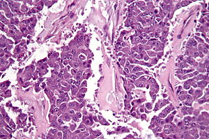

Acinar Cell Carcinoma
MADASHI CANCER GENOMICS
BACK TO HOME

Acinar Cell Carcinoma of the Pancreas
Acinar cell carcinomas (ACCs) of the pancreas are rare pancreatic neoplasms accounting for about 1 - 2% of pancreatic tumors in adults and about 15% in pediatric subjects. They show different clinical symptoms at presentation, different morphological features, different outcomes, and different molecular alterations. This heterogeneous clinicopathological spectrum may give rise to difficulties in the clinical and pathological diagnosis with consequential therapeutic and prognostic implications. The molecular mechanisms involved in the onset and progression of ACCs are still not completely understood, although in recent years, several attempts have been made to clarify the molecular mechanisms involved in ACC biology